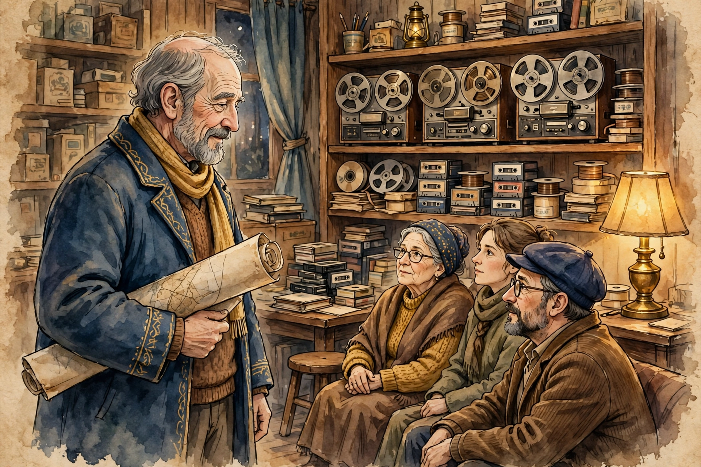
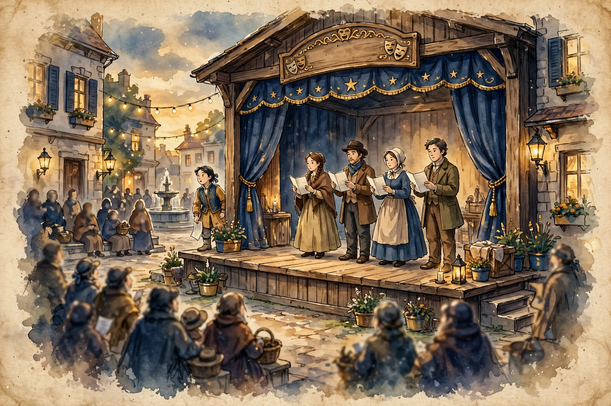
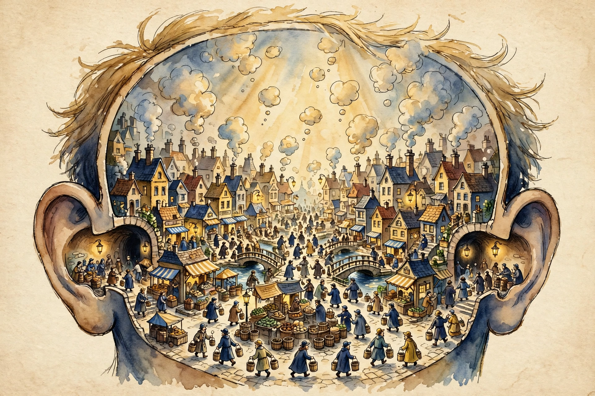
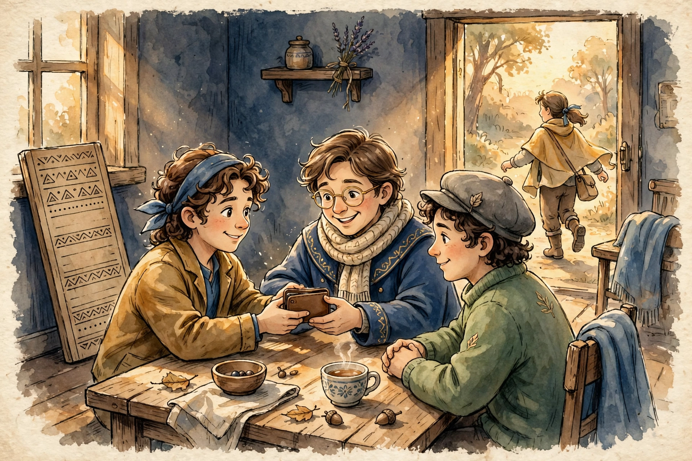

Meet Jan Cox
Jan Cox was a teacher who talked — thousands of talks, preserved as 3,311 recordings — and what he handed his listeners was not a doctrine but a map: a way of describing how consciousness actually works.
Source: The talks themselves (3,311 recordings). The map he offers is Glossary #086, “Maps.”

The ACT
Ordinary life, Cox said, is an Act: no one knows what thought they will next have, yet the collective life of humanity proceeds “as though thoroughly scripted.” Seeing the Act clearly is the first step off the stage.
Source: Glossary #001, “The ACT.”
Mechanical Man
Under normal conditions, says Cox, man does nothing — “everything is done through him, a cog in a living machine.” Habit runs the show through three circuits — body, emotions and intellect — while the man himself is asleep to the difference between the physical and intangible worlds.
Source: Glossary #089, “Mechanical”; #020, “Asleep”; #047, “The Circuits.”
Life
Behind the machine stands something larger: Life itself — a living process that works through people the way a body works through its cells. “Life has its own agenda and will not change it for you,” and people are its dutiful cells, “working in the best interest of the larger cellular being, Life.”
Source: Glossary #036, “Cells”; #010, “Agenda.”

The City
The City is Cox's picture of the ordinary mind from inside: a crowded inner metropolis where “no one is upset that the pail they are given is never filled,” where all behavior is impulsive and people “will do anything except what works.”
Source: Glossary #049, “The City”; #051, “Compulsive Behavior.”
Neuralizing
The practice begins with a different kind of thinking. Neuralizing is “thinking about something in a manner other than your native consciousness normally would” — floating a thought above the grasp of either-true-or-false, and seeing the familiar as if for the first time.
Source: Glossary #095, “Neuralizing.”

The Code of Conduct
Insight gets practical in the Revolutionist's Code of Conduct — working rules for daily life. It opens plainly: “Don't steal or be deceitful,” and “Stay out of debt.”
Source: Code of Conduct #001 and #002, in conduct.json.
Maps
And a last warning about everything in these panels: all of it — the Act, the City, the circuits — is a map, and maps are “two dimensional descriptions of a three-dimensional reality; temporary, ever-changing, ultimately disposable.” Use the map; don't mistake it for the territory.
Source: Glossary #086, “Maps.”